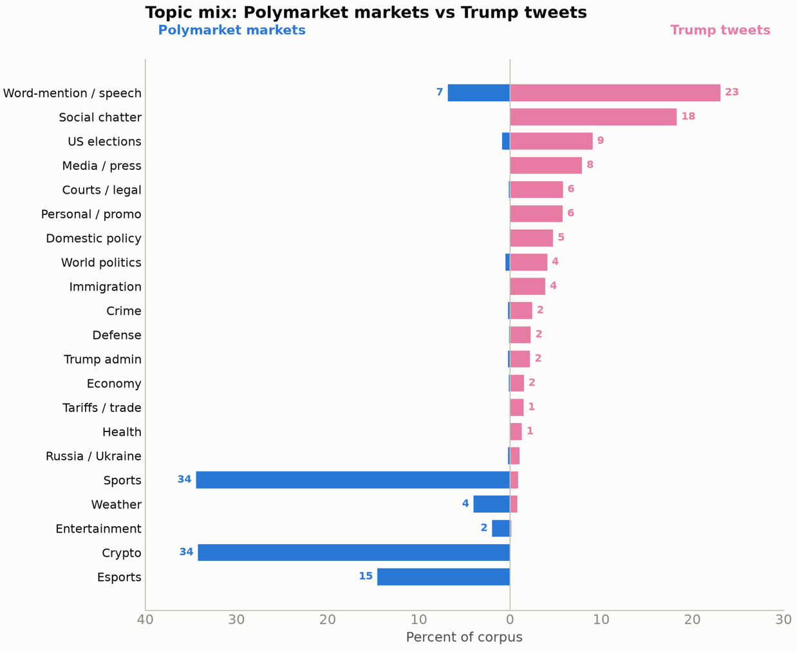

Data Collection and Wrangling
This section ...
Data Collection
We downloaded historical Polymarket data from the following publicly available dataset: Polymarket dataset on Hugging Face .
- 107GB dataset containing all historical data until early 2026
- markets.parquet: Market information (question, creationtime, etc.)
- quant.parquet: Market prices (unified YES perspective)
Example entries from the markets.parquet dataset:
For the post history of Donald Trump we downloaded an already existing Dataset from https://datadrivendecisionlab.com/resources?resource=trump-tweets-dataset , which provided posts from 2009 to the end of 2025. To get more recent posts from Truth Social, we wrote a simple scraper. The scraper was written in python using selenium. The final data was scraped on the 10th of june and we scraped post gong back to the 25 of December, to complete missing data. Two weeks after the last time the scraper was used, the RUB network was fingerprinted by cloudflare and we couldnt gather more recent posts.
Scraping content from Twitter and Truth Social breaks the TOS of boath platforms. We decided to do it anyways, since the alternative would have been to pay Elon Musk (Twitter) and Donald Trump (Truth Social) money, to use their respective APIs
to make it possible to work with the data we removed some of the Posts:
- Posts only containing images or videos where removed, since implementing immage recognition for topic recognition was out of scope.
- we removed Post which did only retweet a diffrent post without adding more text, since those are also implementet as immages.
Data Processing
Steps- Filter out posts with only videos or images or pure retweets
- Assign topics to each market and post using ML
- Enter into shared database for correlation analysis
